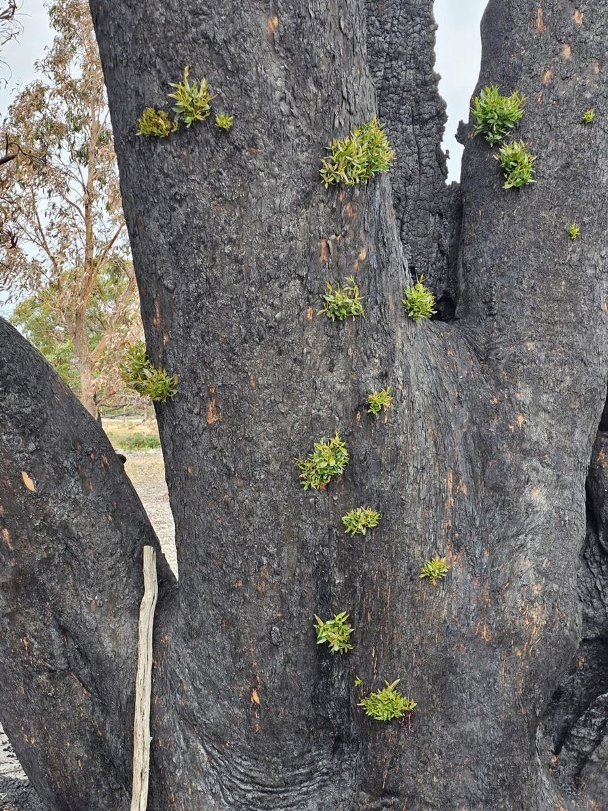
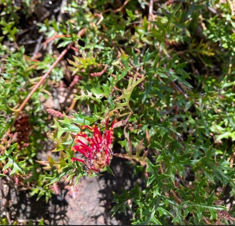
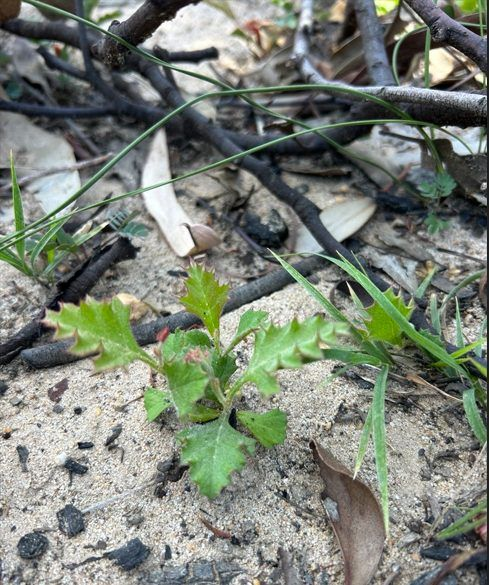
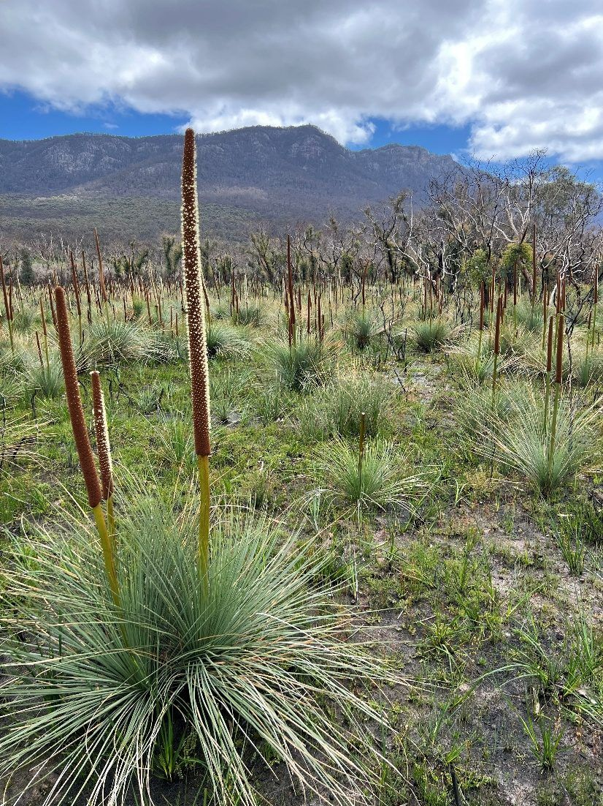
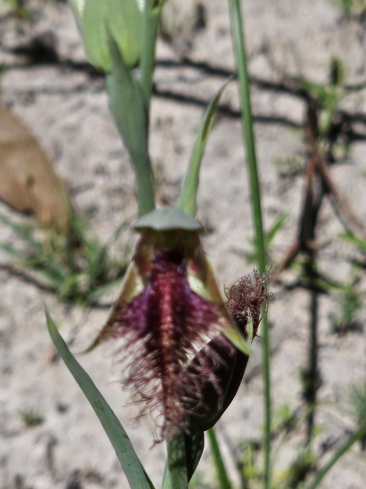
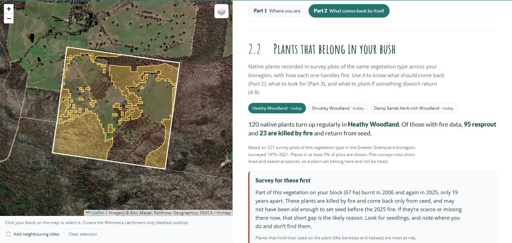
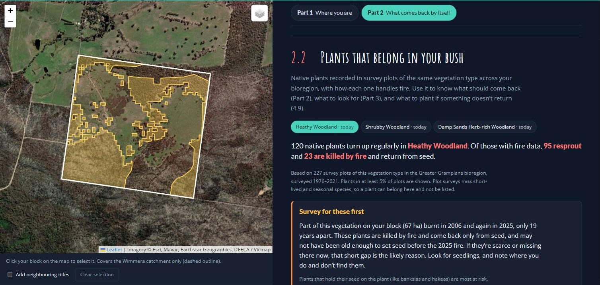
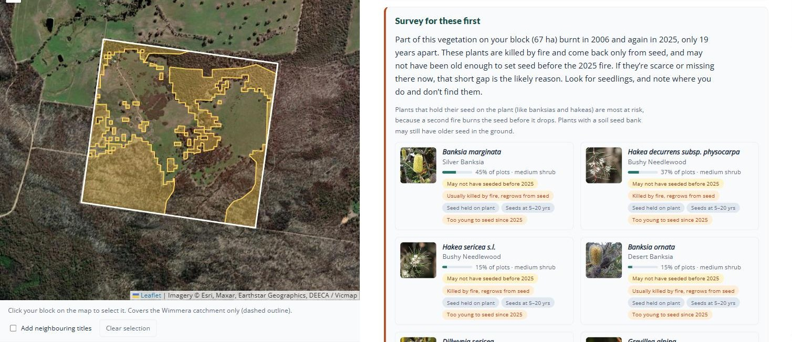
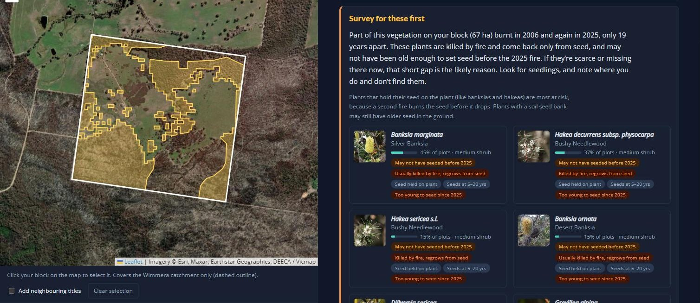

The return of sensitive plant species
In the first weeks the bush looks dead. Most of it isn’t. Nearly every plant on your block uses one of two strategies to return after fire: it resprouts, or it is killed and comes back from seed. These life strategies help us identify which plants are going to be just fine, and which ones are more sensitive to fire when it comes outside of tolerable fire intervals.
1. Resprouters — back in weeks
Growing points protected under thick bark or underground. Eucalypts shoot straight down the trunk and along the limbs; grasses and bracken come from underground; grass trees have been recorded shooting within a fortnight.12
Look for: shoots emerging from bark, fresh growth at the base of a trunk, green spears in a burnt tussock. If you see this, the plant is fine.
On the example block: Brown Stringybark, Austral Grass-tree, Heath Tea-tree, Spiny-headed Mat-rush and Austral Bracken.

2. Obligate seeders — killed by fire, and start over from seed
Killed outright, returning only from seed in the soil or released from woody fruit by heat. Most local banksias, hakeas, wattles and peas.342
Look for: nothing at first, then a carpet of seedlings, usually late in the first year. The parent plants stay dead.
On the example block: Golden Wattle, Myrtle Wattle, Bushy Needlewood (Hakea decurrens), Desert Banksia and Grampians Thryptomene.


Seeders may also be fire-cued germinators — you likely have never seen these before!
Seed that sits in the soil for decades until smoke or heat breaks dormancy. It is why people find orchids, lilies and peas they are certain were never there — the orchid response after Black Saturday was documented in detail for exactly this reason.5 After the 2006 Mt Lubra fire, monitoring turned up entirely new populations of threatened plants in country unburnt for fifty or sixty years.4
Look for: anything unfamiliar, especially in the first spring. Much of it won’t be visible again for decades.
On the example block: Running Postman and Showy Parrot-pea, whose hard seed germinates after the heat of a fire; Austral Grass-tree, which flowers en masse after fire; and Pink Fingers and Wax-lip Orchid, which flower most strongly in the first spring after a fire.


Some seeders only occur during the juvenile stage
Some plants are built to exploit bare ground, full sun and no competition immediately after a fire. These are the fire ephemerals: fast, short-lived, and useful for holding soil and feeding insects and seed-eaters.2 However, the same opening is what weeds are built for — see Part 4.
On the example block: Cotton Fireweed, Slender Fireweed, Australian Carrot, Small Poranthera and Spoon Cudweed, all of which can grow from seed to seed in under a year.
Why the seeders are the ones to monitor
A resprouter has to be killed outright to be lost, which takes an extraordinary fire. A seeder only has to be caught at the wrong moment.
First, seeders must germinate after the fire. They might come up in a mass germination event, but those numbers will dwindle. Monitoring of the Mt Cassell Grevillea counted 294 seedlings in 2024 and 214 a year later — 73% survival.4
Then they must grow old enough to flower for the first time. After the Mt Lubra fire, Grampians Rice-flower took two years to flower for the first time and Grampians Bitter-pea three.4
If that patch burns again before the seeders have rebuilt their seedbank, they could be gone from it. That is the minimum interval in 1.4, in practice. On the example block, the gap between the last two fires was 19 years. Grampians Rice-flower, which has records in the surrounding country, needed at least two years to reach first flower and several more to build a seedbank. It likely made it this time, but had the fire come ten years earlier, in 2015, the risk of losing it would have been much higher.
Your fire-sensitive plants in the lookup tool
On the Part 2 tab, the Wimmera Bushfire Ecology Lookup Tool lists the native plants characteristic of your block’s combination of vegetation types which may be most sensitive to fire at inappropriate frequency.
If you want to see all characteristic species for your block’s combination of EVCs, use the Wimmera Vegetation Guide Tool.
There is a tab for each vegetation type on your block, plus an All together tab for the whole block; the vegetation you are looking at shows in yellow on the map. Each plant card shows a photo from iNaturalist (tap the name to open it there) and a row of icons:
- The fire that may have come too soon, or the year to keep fire out until — the card’s headline, explained below.
- Years to first seed — how many years a seedling takes to set its first seed.
- Where its seed is kept — in the soil, where older seed may survive a fire, or held on the plant in woody fruit, which burns with the plant.
- Threatened — shown for species listed as threatened in Victoria or nationally.
Species that are worth being your focus are pulled into two groups:
- Survey for these first — shown where part of your block burnt twice within the time these plants need to set seed, so they may have had no seed on board when the second fire came. Plants that hold their seed in woody fruit, like banksias and hakeas, are most at risk, because the second fire burns the seed before it drops.
- Should be fine if fire stays out until … — the other seeders, still growing back from the last fire. The year is when the slowest of them should be seeding, but only if the seedlings get the chance to grow: weeds that smother them, or rabbits, deer and other grazers that eat them, can wipe them out just as surely as a fire that comes too soon (Part 4).




On the Heathy Woodland tab, the lookup tool works from 227 survey plots of Heathy Woodland in the Greater Grampians, surveyed between 1976 and 2021. Most of the plants commonly recorded there resprout, such as Heath Tea-tree, Flame Heath and Austral Grass-tree, which is why this country greens up quickly after a fire. The tool leaves those out and shows only the seeders still growing back.
Because 67 hectares burnt in 2006 and again in 2025, only 19 years apart, it puts nine seeders under Survey for these first, among them Silver Banksia, Showy Parrot-pea, Cat’s Claw Grevillea, Desert Banksia, two needlewood hakeas and Golden Wattle. They take five to twenty years to set their first seed, so some may have had none on board when the 2025 fire came. The banksias and hakeas hold their seed on the plant, which makes them the most exposed.
The other ten seeders sit under Should be fine if fire stays out until 2030, led by Common Fringe-myrtle and Pine Heath. They are growing back from the 2025 fire and should all be seeding by then, as long as weeds and grazing animals don’t get to the seedlings first.
The Shrubby Woodland and Damp Sands Herb-rich Woodland tabs are each built from far fewer plots (41), so read them more loosely. Shrubby Woodland shows the same two groups. The Damp Sands Herb-rich Woodland escaped the 2025 fire, so none of its seeders are flagged.
What we would watch here: the seeders on the ground that burnt twice. If the parrot-peas, banksias and wattles are thin there in the third year while the stringybarks and grass-trees look fine, the canopy has recovered and the shrub layer has not. That is the pattern to catch early (section 3.3), because it changes what the block can support for decades. The ground that escaped in 2025 is the comparison: it shows what the shrub layer should look like.
The example species under each strategy come from the lookup tool’s plant lists for the example block’s three vegetation types. Resprouters, seeders and space-takers follow the tool’s fire-trait data (AusTraits,6 mainly DEECA’s Vital Attributes). The tool does not record what triggers germination or flowering, so the fire-cued examples were picked from known responses and need a botanist’s check before publishing (Huib or a local ecologist).
The lookup tool shows Silver Banksia as Usually killed by fire (the published records disagree), while Pauline Rudolph’s talk says it does both. Worth checking which is right for this district, and whether the tool needs a local override.
The plant figures for the example block (nine under Survey for these first and ten fine until 2030 on the Heathy Woodland tab) were read from the lookup tool on 2 October 2026, before its plant cards were simplified. Recheck them, and retake both screenshots above: they still show the old full plant list. The tool also gives two different hakeas the common name Bushy Needlewood; one of them needs correcting in its data.
The “Wimmera Vegetation Guide Tool” in the box above needs a link once it is built.